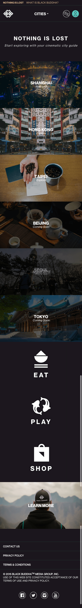

Black Buddha Navigation System
For the first part of this project, I will focus on optimizing the site navigation – focusing on the way a first time user might encounter the site knowing little about it, what one can do on it, and how they might discover all it has to offer. The current homepage looks like this:

This is how it looks like on a mobile phone:

$ cd your_repo_root/repo_name
$ git fetch origin
$ git checkout gh-pages
If you're using the GitHub for Mac, simply sync your repository and you'll see the new branch.
Designer Templates
We've crafted some handsome templates for you to use. Go ahead and continue to layouts to browse through them. You can easily go back to edit your page before publishing. After publishing your page, you can revisit the page generator and switch to another theme. Your Page content will be preserved if it remained markdown format.